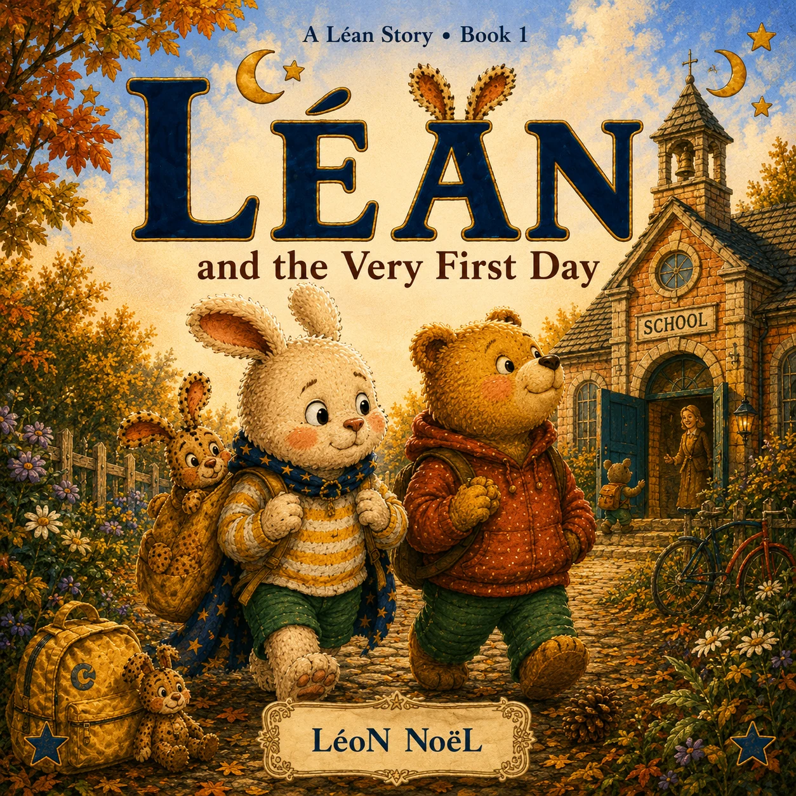
Book 1 of 10
Léan and the Very First Day
The first day of school can feel enormous. Léan discovers that new beginnings become easier with friendship, questions, and courage.
 LéoN NoèL
LéoN NoèL
The Léan Series · 10 books
Léan is a curious young rabbit navigating the small adventures and big feelings of everyday childhood, with his best friend Rèpi and his beloved doudou Nik by his side.
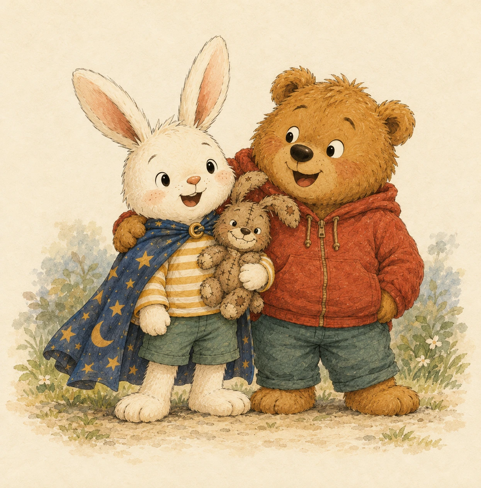
A new story world
The Léan Series follows Léan, a curious young rabbit, as he navigates the small adventures and big feelings of everyday childhood. With his best friend Rèpi and his beloved doudou Nik by his side, Léan faces first days, new places, bedtime worries, waiting, mistakes, surprises, and moments of growing independence.
Each fully illustrated story combines gentle humor, emotional warmth, and relatable situations young children recognize from their own lives. The books are designed to be enjoyable read-aloud stories first, while naturally opening the door to conversations about confidence, patience, kindness, fear, problem-solving, and trying again.
Tender, funny, and reassuring, The Léan Series celebrates the ordinary moments that can feel very big when you are small.
The complete Léan Series

Book 1 of 10
The first day of school can feel enormous. Léan discovers that new beginnings become easier with friendship, questions, and courage.
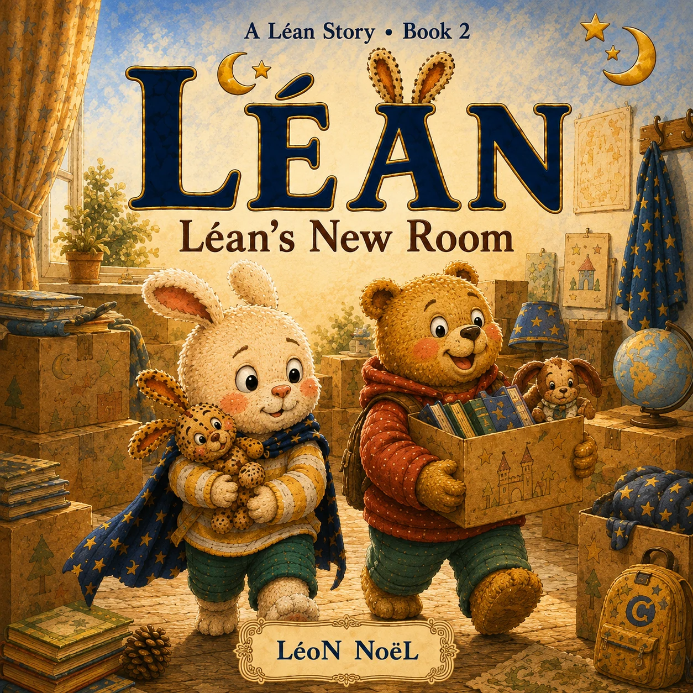
Book 2 of 10
Moving to a new home changes many familiar things. Léan learns that a place becomes home through comfort and memories.
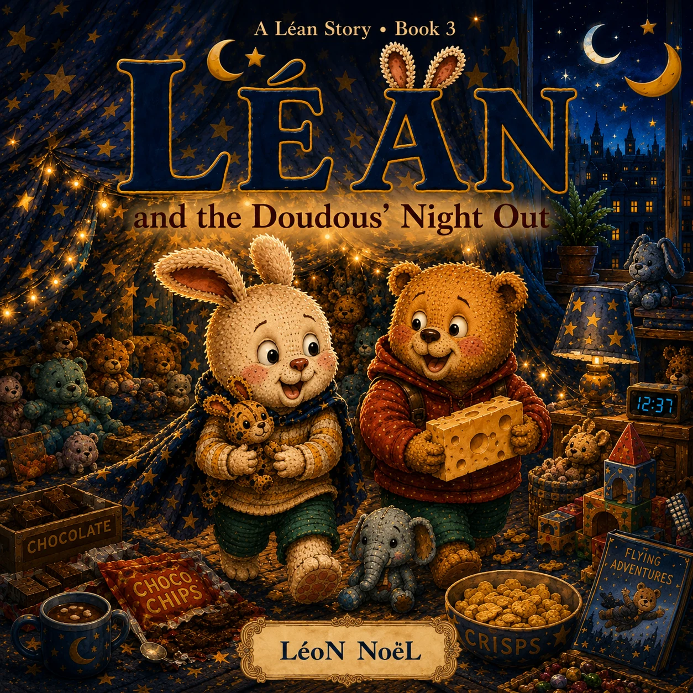
Book 3 of 10
When the doudous have plans after bedtime, Léan discovers imagination, fun, and why some rules matter.
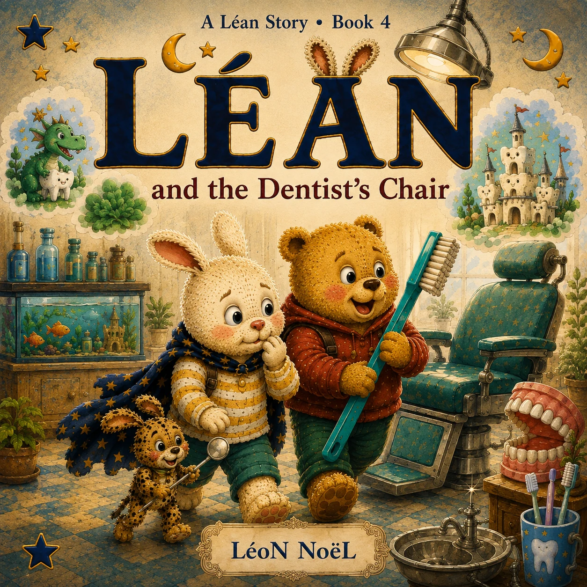
Book 4 of 10
A dentist visit feels less scary when Léan asks questions and understands what will happen next.
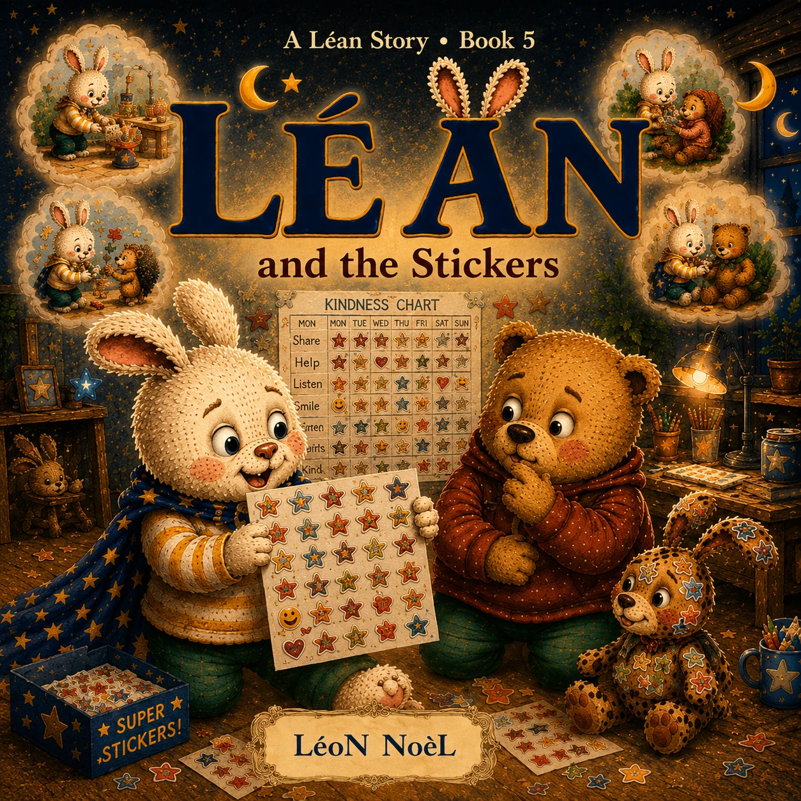
Book 5 of 10
Léan learns that kindness, effort, and trying matter even when nobody is counting stickers.
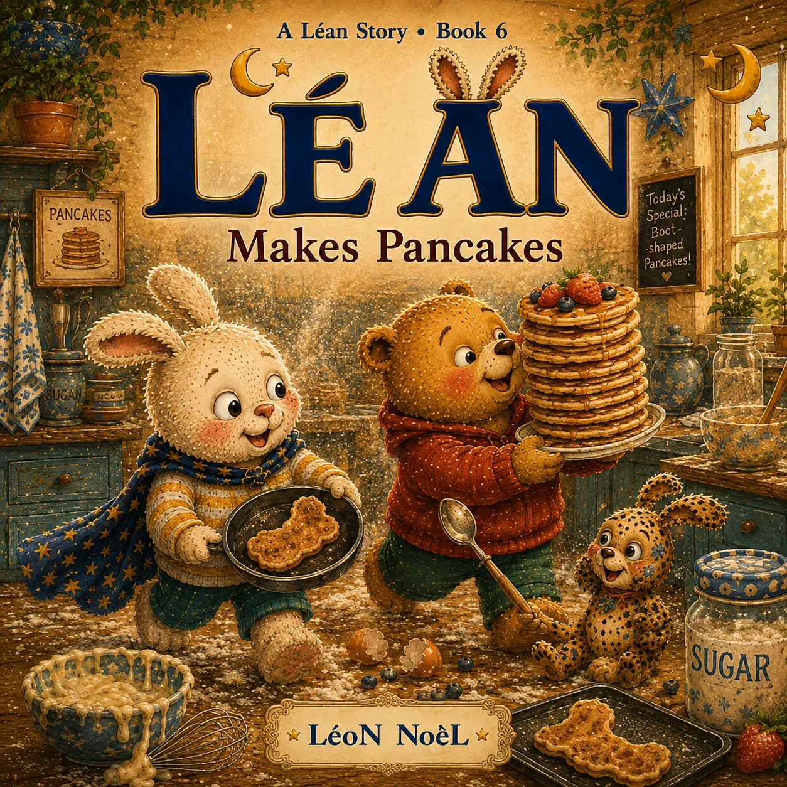
Book 6 of 10
Cooking pancakes with Rèpi and Nik becomes a delicious adventure in experiments and learning from mistakes.
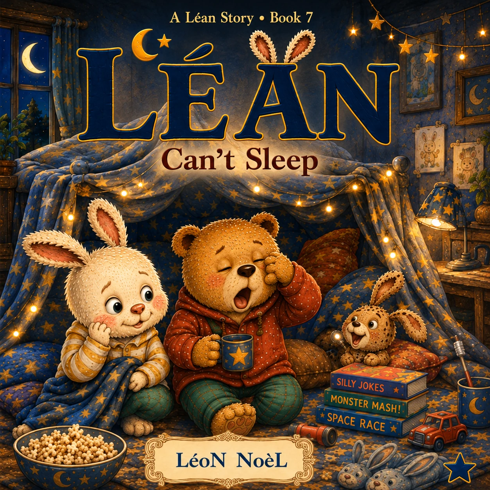
Book 7 of 10
A sleepover brings excitement and nighttime worries. Léan discovers small ways to feel safe away from home.
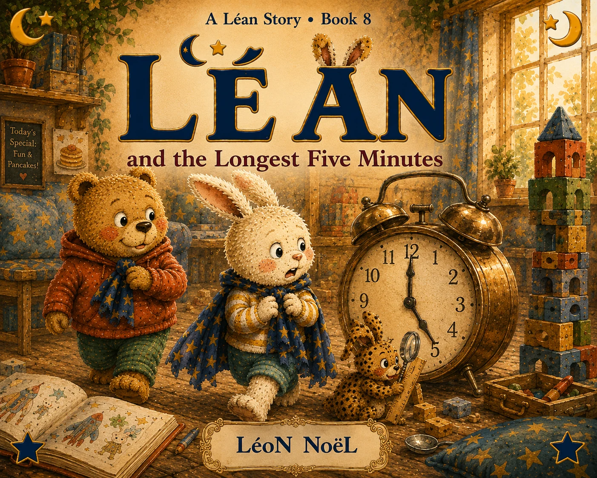
Book 8 of 10
Five minutes can feel very long when you are waiting. Léan explores patience and how children experience time.
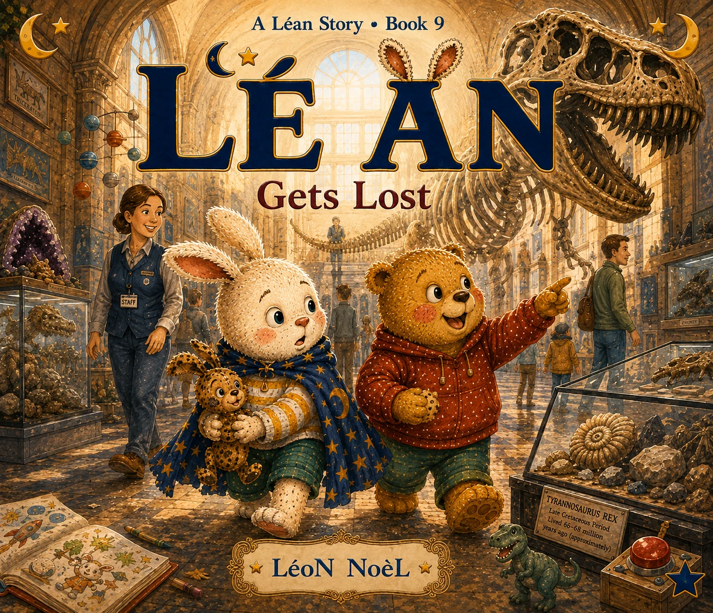
Book 9 of 10
At a busy museum, Léan learns what to do when separated and how to ask a safe grown-up for help.
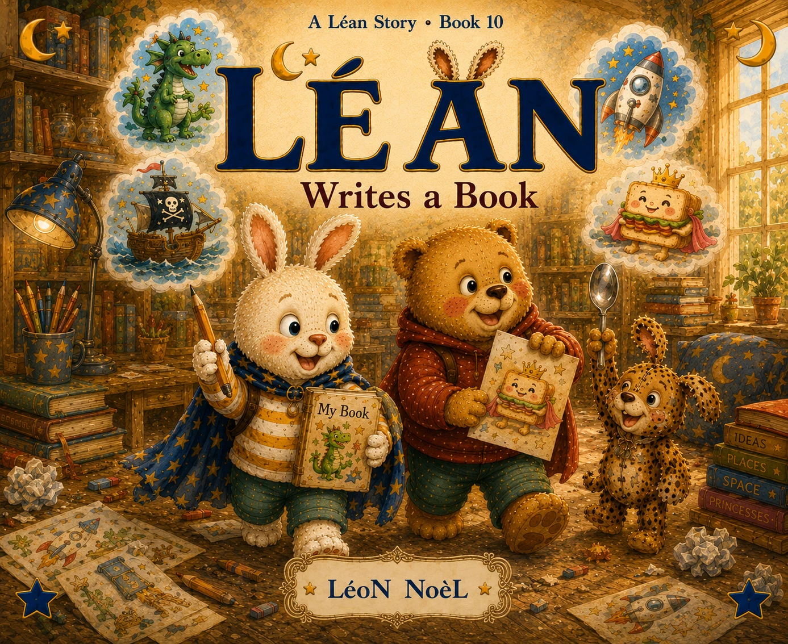
Book 10 of 10
Léan writes his own story and discovers that creativity matters more than making everything perfect.
Explore the full catalogue
Browse Yok, Blue Dreams Forest, Same Moment, Different World, and the rest of LéoN NoèL’s growing bookshelf.